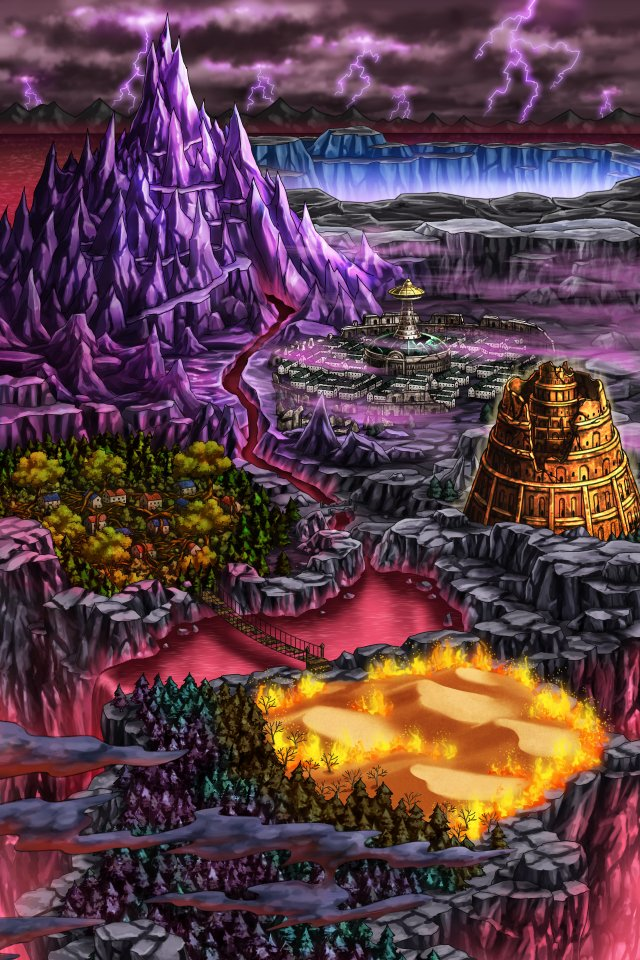
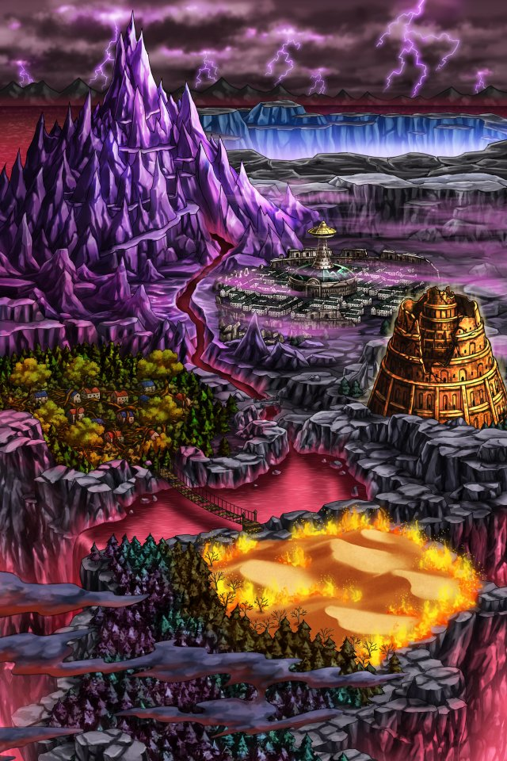
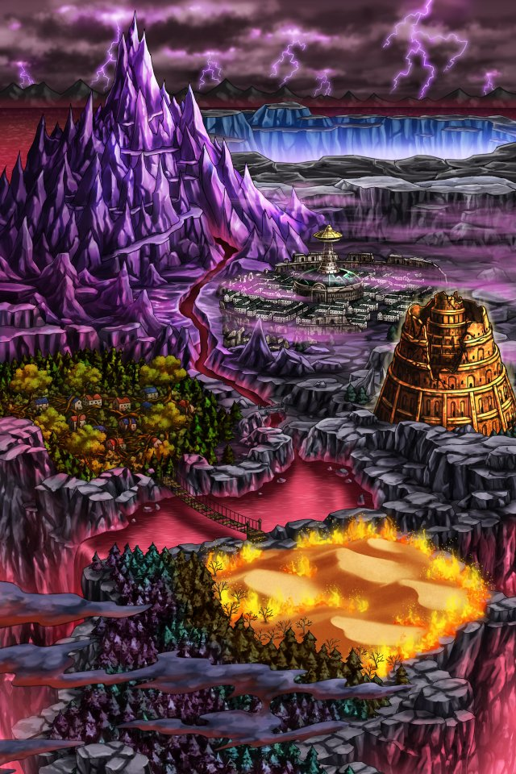

カル
ここがバリウラか。
セリア
なんか、陰気な所ね。
セリア
早くティリスを探して 話を聞きましょう！
ルジーナ
目的を間違えるなよ。
ルジーナ
俺たちはルシアス“様”に呼ばれて こんな所まで来たんだからな。
セリア
わかってるわよ！
セリア
でも、ルシアス様と話すにしても
セリア
ティリスのことをちゃんとしておかないと 気持ち悪いでしょ。
パリス
私もその気持ちはわかるわ。
パリス
モヤモヤした状態で ルシアス様と話しても
パリス
余計に混乱するだけな気がする……。
パリス
“元”インペリアルガード様が言うと 説得力が違うな。
パリス
クッ……。
カル
まあまあ。
カル
さて、とはいっても どこを目指して進むかな。
？？？
ルシアス様は グランガイア封穴でお待ちしている。
カル
お前は…アーク！
アーク
ここから見える帝都バリウラの先
アーク
奉神霊山バリを越えた地、 グランガイア封穴を目指すがいい。
アーク
そこでルシアス様はお待ちしている。
セリア
待って！
セリア
ティリスもそこにいるのよね！！
カル
……行っちまったな。
セリア
…………。
カル
まあ、とりあえず目的地は決まったな。
カル
まずは、この先の森を抜けるとしよう。
カル
Shou-chan。 心配するなって。
カル
きっと女神さんにも この先のどこかで会うことになるさ。
カル
どんな再会になるかは わからないがな……。
 
